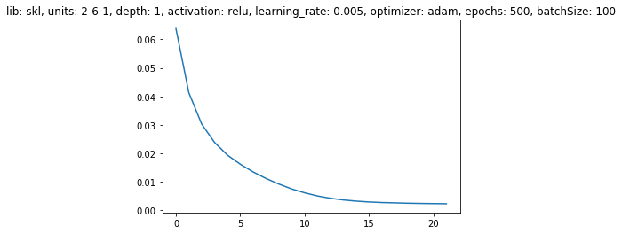
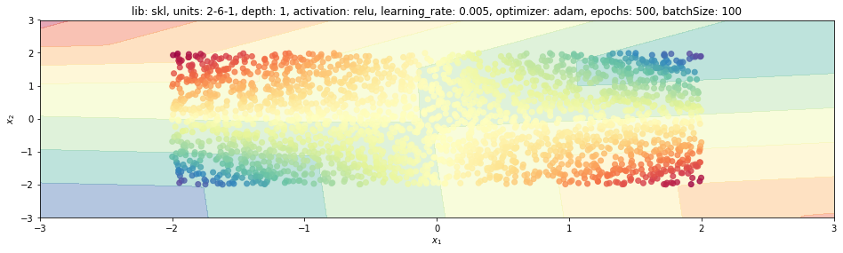
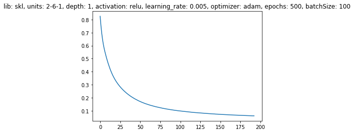
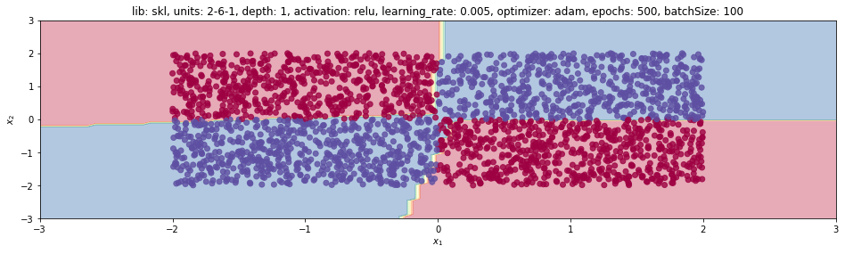

1. Introduction
This post belongs to a new series of posts related to a huge and popular topic in machine learning: fully connected neural networks.
The general series scope is three-fold:
- visualize the model features and characteristics with schematic pictures and charts
- learn to implement the model with different levels of abstraction, given by the framework used
- have some fun with one of the hottest topics right now!
In this new post, we are going to analyze how to train a neural network on toy examples with Scikit-learn. We are going through the following steps:
- training setting
- define the network architecture: dense layer, activation function and stack of layers
- train: loss and accuracy functions, optimizer and learning process
- visualize prediction
Point 2 implies to create a layer class with corresponding weights and biases that need to be learned during train step.
The whole code to create a synthetic dataset and learn a neural network model with any of the four libraries mentioned above is wrapped into a Python class, trainFCNN(), and can be found in my Github repo.
2. Installing and importing
First of all, we need to install this library with the pip command and to import the required package.

$ pip install numpy matplotlib sklearn
import numpy as np
from sklearn.neural_network import MLPClassifier, MLPRegressor
%matplotlib inline
import matplotlib.pyplot as plt
3. Train function
Now we need to define the network itself with any of the four different libraries.
The functionalities and the process are created and handled within the train function.
We initialize the main parameters for this function as follows:
def train(self, nb_epochs=100, dims=[2], activation='sigmoid'):
self.LR = 0.005 # learning_rate
self.nb_epochs = nb_epochs
self.nb_batch = 100
self.activation = activation
self.nb_layer = len(self.dims)-1 # number of layers in the network with learnable parameters
dims helps us to define the dimensions of the number of units for every hidden layer.
This is a list of integers where each integer specifies the number of units for every hidden layer.
If we want to have 1-input layer, 3-hidden layer and 1-output layer neural network, then we can just feed a list of 3 integers, such as [2, 4, 4], because internally the code is going to also append one dimension for the input, whose number of units is fixed and equal to 2 for the two inputs only, and, at the end, one for the output, which can be either 1, if you have a regression or a binary classification, or the number of output layer units equal to the number of classes self.nb_class, if we have multi-class problem.
Just recall that, if we have a binary problem, we just need to output the probability of the input to belong to one of the two classes, that’s why we only need one output!
self.dims = [2] + dims + [self.nb_class if self.kind=='multiCls' else 1]
We want to differentiate the activation function for the output layer self.lastActFun.
For regression that has to be a linear activation, since we just need to take the dense layer output and use it as the response variable.
We need a sigmoid function for a binary classification because we want to squeeze the dense layer output to 0-1 range and that is going to represent the probability of the input to belong to any of the two classes.
In the last case, a multi-class problem, we need a softmax function for the last layer.
self.lastActFun = 'sigmoid' if self.kind == 'binCls' else 'softmax' if self.kind == 'multiCls' else 'linear'
4. Building and training the model with Sklearn
We start analyzing how we can define a model with Sklearn.
If we have a regression problem, we just need to use the regressor class MLPRegressor.
Instead, if we have a classification problem, either binary or multi-class, then we need to use the classifier class MLPClassifier.
MLP stands for multi-layer perceptron.
Both classes can be imported from sklearn.neural_network.
Except that, the entire set of attributes that we need to define for both cases is exactly the same, so we just need to understand one case. What follows applies to regression.
mdl = MLPRegressor(hidden_layer_sizes=tuple(self.dims[1:-1]), max_iter=self.nb_epochs,\
alpha=0, activation=self.activation, learning_rate_init=self.LR, solver=optName)
The next one applies to classification.
mdl = MLPClassifier(hidden_layer_sizes=tuple(self.dims[1:-1]), max_iter=self.nb_epochs,\
alpha=0, activation=self.activation, learning_rate_init=self.LR, solver=optName)
The first attribute hidden_layer_sizes we need to specify is a tuple of the number of units for hidden layers so we are going to take dims and we start from the second element up to the last but one, because we just need to feed whatever is related to the hidden layers.
Then we need to specify the number of epochs self.nb_epochs as max_iter.
Here we do not want to have regularization active so we specified alpha equal to 0, activation equal to the user-defined activation function and initial learning rate equal to self.LR.
By default, the learning rate is not going to change during the training process but there is also the option to make it reduce to eventually have a different behaviour of convergence.
We let the user select either sgd or adam as the optimizer.
Please note that the Sklearn solver here refers to the same concept as the optimizer in Tensorflow, Keras and Pytorch.
Solver aims at sorting out the optimization problem!
Now everything is stored into mdl instance.
The model is built and located into this object.
From this object, we just need to call the fit method and to feed X as input and Y as output.
Since our structure for Y is a 2D array in every case, we need to convert that into a 1D array by using the ravel() function from Numpy.
At the end of this line, Sklearn has learnt the optimal weights and biases of the entire network.
It means that the entire learning process is going to happen within this line.
The next step is to use the prediction function predict() so we want to have the prediction of the model for the entire grid of inputs so we can visualize the actual behaviour on the entire two-dimensional space and compare such behaviour to the dataset points.
Finally, we want to have the history of the loss stored in lossHistory with respect to the number of epochs, so we can learn and understand the behaviour of the model over time during the learning process.
If it is also required to have a look at the model parameters nn_prms, weights and biases, we can get access by using coefs_ and intercepts_ for weights and biases, respectively.
YY = self.YY.ravel()
mdl.fit(self.XX, YY)
self.nn_Ygrd = mdl.predict(self.XXgrd)
self.lossHistory = mdl.loss_curve_
self.nn_prms = mdl.coefs_ + mdl.intercepts_
5. Visualize some results
5.1 NN model with a regression problem
We visualize the loss history and the model prediction throughout the 2D grid for the product problem (regression).
tnn = trainFCNN(nb_pnt=2500, dataset='prod')
tnn.train(lib='skl', dims=[6], activation='relu', nb_epochs=500, lr=0.005)
plt.plot(tnn.lossHistory)
plt.title(tnn.mdlDescription());

tnn.plotModelEstimate(figsize=(16, 9))

5.2 NN model with binary classification
We visualize the loss history and the model prediction throughout the 2D grid for the XOR problem (binary-classification).
tnn = trainFCNN(nb_pnt=2500, dataset='xor')
tnn.train(lib='skl', dims=[6], activation='relu', nb_epochs=500, lr=0.005)
plt.plot(tnn.lossHistory)
plt.title(tnn.mdlDescription());

tnn.plotModelEstimate(figsize=(16, 9))
